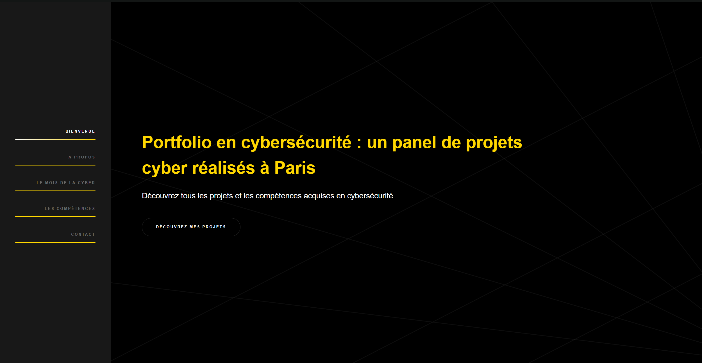

La réalisation du projet de Pentest
La création du site personnel HTML 5UP
Pour nous aider à nous familiariser avec le HTML, le CSS et le JavaScript, nous avons dû réaliser un site internet personnel (sur le sujet que l'on souhaitait) en utilisant un template d'HTML 5UP (au choix). Nous devions ensuite le modifier à notre guise afin d'en faire un site qui nous ressemble sur le sujet de notre choix.
J'ai décidé de réaliser un site cyberfolio afin de présenter les premiers projets. Le template choisi est le modèle HyperSpace. J'ai ensuite adapté le modèle à ce que je souhaitaitais en ajoutant des photos, des vidéos, des pages au site ou encore en modifiant les couleurs initialement violettes pour un fond noir avec des touches de jaunes et de blanc.